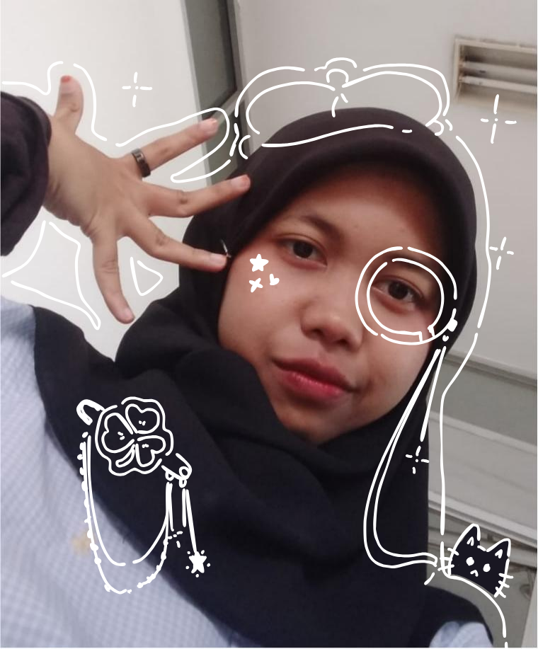
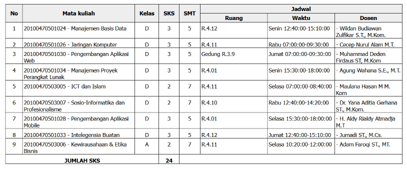

Salwa Aulia Nasywa
IT & Creative Enthusiast | Study Artist
Get to Know Me..
Informatic Engineering student at UIN Sunan Gunung Djati Bandung (2024). Currently balancing my degree with honing my creative skills and building my art portfolio. Excited about blending technology and digital art.
Current Semester Schedule
| Num | Code | Classroom | Course | Professor | Credits | Day / Time |
|---|---|---|---|---|---|---|
| 1 | IF101 | Room 4.12 | Manajemen Basis Data | Wildan Budiawan Zulfikar S.T., M.Kom. | 3 | Monday / 12:40-15:10 |
| 2 | IF203 | Room 4.11 | Manajemen Proyek Perangkat Lunak | Agung Wahana S.E., M.T. | 3 | Monday / 15:30-18:00 |
| 3 | IF221 | Room 4.11 | ICT dan Islam | Maulana Hasan M.M., M.Kom. | 2 | Tuesday / 07:00-08:40 |
| 4 | IF304 | Ruang 4.11 | Kewirausahaan dan Etika Bisnis | Adam Faroqi S.T., M.T. | 2 | Tuesday / 10:20-12:00 |
| 5 | IF304 | Room 4.01 | Pengembangan Aplikasi Mobile | H. Aldy Rialdy Atmadja M.T. | 3 | Tuesday / 15:30-18:00 |
| 6 | IF304 | Room 4.11 | Jaringan Komputer | Cecep Nurul Alam M.T. | 3 | Wednesday / 07:00-09:30 |
| 7 | IF304 | Room 4.10 | Sosio-Informatika | Dr. Yana Aditia Gerhana S.T., M.Kom. | 2 | Wednesday / 12:40-14:20 |
| 8 | IF304 | Building R 3.09 | Pengembangan Aplikasi Web | Muhammad Deden Firdaus S.T., M.Kom. | 3 | Friday / 07:00-09:30 |
| 9 | IF304 | Room 4.09 | Artificial Intelligence | Jumadi S.T., M.Cs. | 3 | Friday / 12:40-15:10 |
